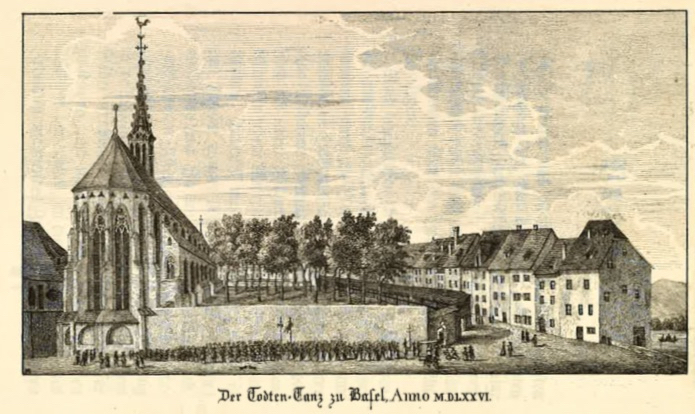
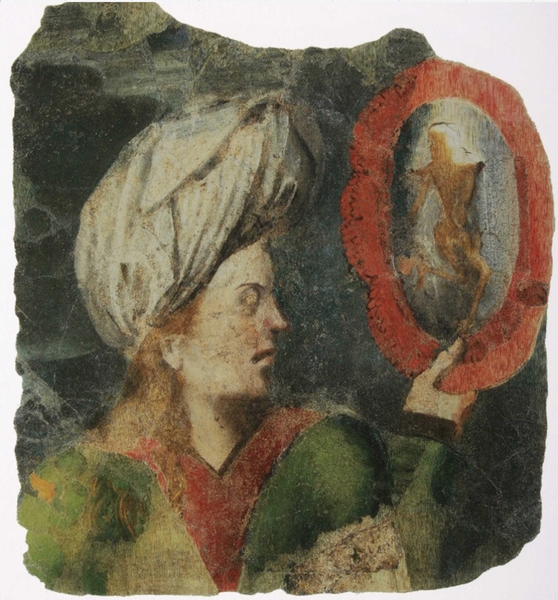

Nichts erinnert heute auf den ersten Blick an einen «Totentanz», wenn man den Platz mit diesem Namen betritt. Eher beiläufig gepflegt liegt der Kleinstpark am Rande der Altstadt. Kaum jemand sitzt unter den Linden, der nicht auf ein Tram wartet. Und kommt das Tram, ist alles wieder leer. Ein seltsam unbehauster Platz, – wo einst der Tod getanzt hat. Nicht einmal die Tramhaltestelle trägt seinen Namen, sondern musste nach einigem politischen Gezerre dem «Universitätsspital» den Vorrang lassen.

Der Abbruch des Basler Totentanzes bei der Predigerkirche (entstanden ca. 1846), Handkolorierter Stich des Künstlers Konstantin Guise (Kassel 1811 – Basel 1858).
Vom tanzenden Tod …
Bis in den August des Jahres 1805 allerdings konnte sich in Basel ein
monumentales Totentanz-Gemälde auf der Innenseite der rheinzugewandten
Umfassungsmauer des Friedhofs des ehemaligen Dominikaner-Klosters trotz
verschiedener Überarbeitungen und Renovationsbedürftigkeit erhalten. Bis
auf wenige Fragmente, die sich heute im historischen Museum befinden,
wurde dieses grosse Kulturgut unwiederbringlich zerstört.
Der
Totentanz, der sich in seiner ikonographischen Ausprägung wesentlich der
Mentalität des europäischen Mittelalters verdankt, stellt eines der
wenigen «mittelalterlichen» Motive dar, das in den Jahrhunderten seit
seinem ersten nachweisbaren Auftreten durchgehend und intensiv in
unterschiedlichsten Kontexten rezipiert wurde. Die gegebenen
Vorläufermotive, die sich beispielsweise auf antiken Funden aus einer
Grabanlage in Cumae bei Neapel finden, zeigen die antiken Wurzeln
unserer Motivik und dokumentieren zugleich ihre besondere Transformation
und Funktion im Mittelalter.
Auch wenn die Auseinandersetzung mit
dem Tod ein allgemeines Kennzeichen menschlicher Kultur darstellt,
bleibt der «Tanzende Tod» doch ein signifikantes Merkmal der
europäischen Kultur. Auf nahezu allen Feldern des kulturellen Ausdrucks
im Abendland finden sich Formen der Rezeption des gesamten Totentanzes
respektive einzelner Motive. Dabei ist es überaus erstaunlich, dass
diese Tradition der künstlerischen und zum Teil auch politischen
Adaption, Veränderung und Interpretation bis in die aktuellste
Postmoderne nicht dem Verdikt verfallen ist, mit dem ansonsten
unreflektiert alle Motive, die aus dem anscheinend «dunklen» Mittelalter
stammen, verworfen werden. In Musik, Tanz, Malerei, Graphik,
Bildhauerei, Literatur, Theater, Filmkunst, Töpferei finden sich
Beispiele für die Arbeit am Totentanz und seiner Modulationen. Nicht
zuletzt gründet diese vielfältige und bis heute ungebrochene Deutung und
Modifikation in der Thematik des Todes, der im Laufe der abendländischen
Geschichte immer markanter als unabänderliches Existential ins
Bewusstsein getreten ist. Ob nun in geistlichem, politischem,
kirchlichem oder ästhetischem Kontext genutzt, – der Totentanz erweist
sich von seiner «Bildwerdung» an als ein überaus flexibler, kreativer
und potenter Motivpool. Die ideengeschichtlichen Potentiale des
öffentlichen Bildmediums, die ursprünglich für die vormodernen
Kirchenreformbestrebungen und die Initialisierung einer persönlichen
Umkehr wirken sollten, haben im Laufe der Geschichte ihre schöpferische
Effektivität nicht eingebüsst. Wesentlich für die kreative Spannung
liegt nicht zuletzt in der Verbindung von literarischer Vorgabe und dem
Übertrag in ein sequentielles Bildmedium.
Merkwürdiger Abend in Basel den 6ten August 1805. Stich von unbekannter Hand.
… und von den einfachen Menschen
Eine wesentliche Generatorenfunktion auf dem Weg zur Entfaltung des Totentanz-Motivs nimmt das Werk des Gelehrten Johannes Charlier de Gerson (1363–1429) wahr. Die unter dem Titel «ars moriendi» in zahlreichen Übersetzungen ausserordentlich weit verbreitete Schrift, hat nach eigener Auskunft einen besonderen Adressatenkreis: Sie soll «ungebildeten Priestern» helfen, «ungebildete weltliche Personen» anleiten, «Kinder und Jugendliche» unterweisen, sowie Menschen, die Kranke und Sterbende besuchen beziehungsweise begleiten, informieren. Ergo: Einfache Menschen, die sich auf Umgangssprache – das gesamte Werk ist ursprünglich in der Volkssprache verfasst – mit den elementaren Fragen einfacher Menschen beschäftigen. In einer davon abgeleiteten Funktion ist der bebilderte, monumentale Totentanz des 14. Jahrhunderts zu denken: Eine Kultivierung der Vorbereitung auf das Sterben mit Hilfe eines ikonographischen Impulses, der die Sakralisierung und die Ethisierung auch des alltäglichen Lebens intendierte. Nicht zuletzt die Fragilität menschlichen Lebens im ausgehenden Mittelalter, die sich in den Bedrohungen durch Pest-Epidemien, Aussatz, Seuchen wie dem Antonius-Feuer, Erdbeben etc. manifestierte, beförderte sowohl die Rezeption von Gersons Werk als auch die Attraktivität der Totentanzdarstellungen. Eine aktivierende Funktion liegt im Weiteren in der zunehmenden Individualisierung des Menschen. Die Wahrnehmung des Ich erfährt im ausgehenden Mittelalter eine markante Intensivierung, dass sich der einzelne Mensch in hohem Mass in seiner Singularität und damit in seiner Verantwortlichkeit zeigt. Dieses Element hat im Verlauf der Totentanz-Rezeption bis in die Postmoderne an Bedeutung gewonnen.
Der Basler Totentanz bei der Predigerkirche Anno 1576. Stich der Brüder von Mechel aus dem Jahr 1796.
Der Tod und das Mädchen. Fragment von Basler Totentanz. Heute: Historisches Museum Basel.
Dr. Michael Bangert ist Pfarrer der Christkatholischen Kirche Basel-Stadt und Privatdozent für Kulturgeschichte des Christentums an der Theologischen Fakultät Basel.
Weitere Artikel von {{ author.author }} finden Sie hier:
Zur Vertiefung:
- Wehrens, Hans Georg: Der Totentanz im alemannischen Sprachraum: «Muos ich doch dran - und weis nit wan», Regensburg: Schnell & Steiner 2012, S. 50ff.
- Dreier, Rolf Paul: Der Totentanz – ein Motiv der kirchlichen Kunst als Projektionsfläche für profane Botschaften (1425–1650), Rotterdam: Erasmus Universiteit 2010.